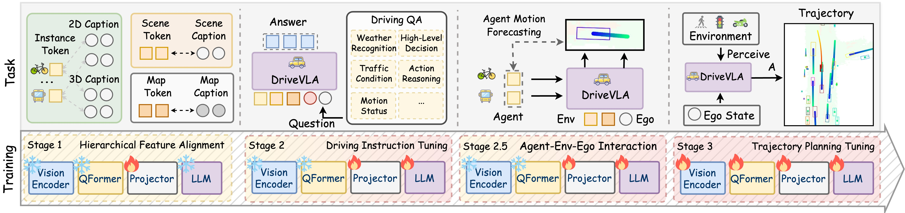
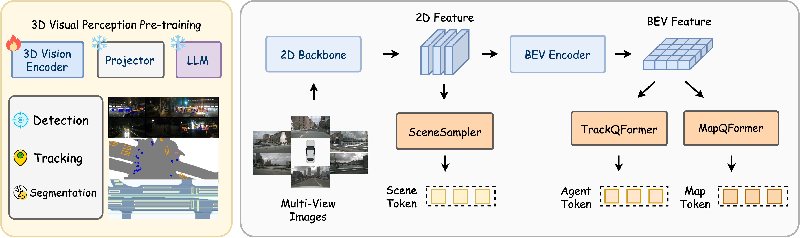
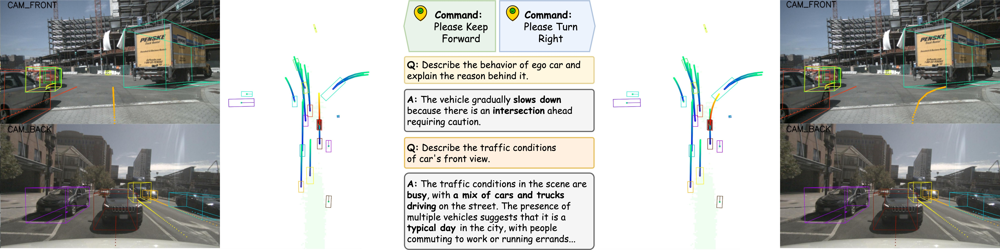
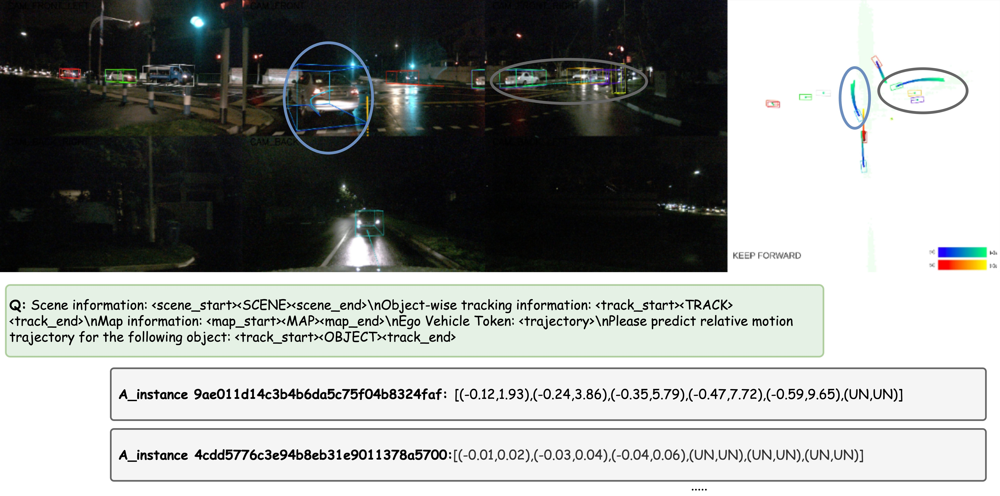
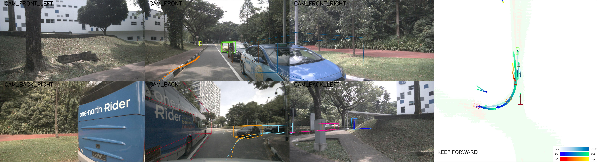
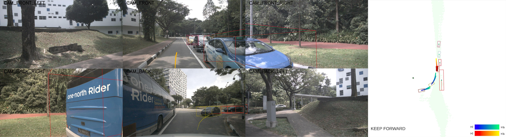
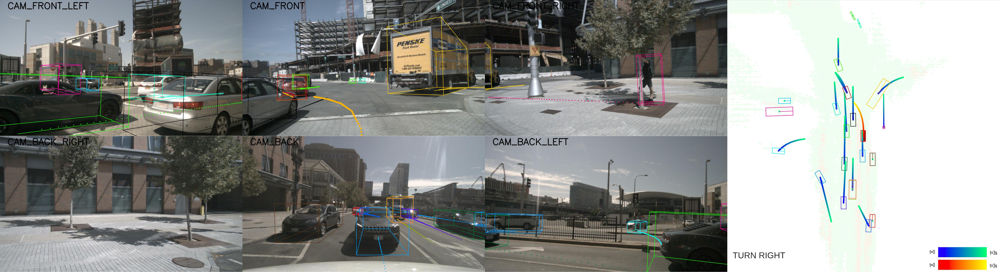

0. 页面头部：论文身份卡片
| 论文 | OpenDriveVLA: Towards End-to-End Autonomous Driving with Large Vision-Language Action Model |
|---|---|
| 作者 | Zhou, Xingcheng；Han, Xuyuan；Yang, Feng；Ma, Yunpu；Tresp, Volker；Knoll, Alois |
| 时间 | 2025/03/30 |
| 方向 | Open-source 3D VLA / autoregressive trajectory planning |
| 核心贡献 | OpenDriveVLA 基于开源 VLM/LLM，把 2D/3D instance-aware scene、agent、map tokens 层级对齐到语言空间，并通过 agent-env-ego 交互任务和轨迹规划微调自回归生成驾驶轨迹。 |
| 模型类型 | 开源 3D Vision-Language-Action 驾驶模型，通过 scene、agent、map token 的分层对齐，把视觉语言理解推进到指令条件轨迹规划。 |
| 输入 | 多相机图像、3D 感知特征、地图与 agent 信息，以及自然语言驾驶指令。 |
| 中间表示 | 视觉预训练产生 scene/agent/map token；随后进行视觉语言对齐、agent-environment-ego 交互建模和规划微调。 |
| 输出 | 问答/描述、agent 运动预测与 ego 未来轨迹。 |
| 训练目标 | 3D 检测/跟踪/BEV 分割预训练，视觉语言任务 next-token 训练，交互预测和轨迹规划监督。 |
| 代码与复现状态 | 是，仓库公开；项目页显示模型/推理/环境逐步发布；很高：最贴近“自动驾驶 VLA”定义的开源工作之一 |
1. 论文速览：用一页讲清楚价值
1.1 一句话贡献
OpenDriveVLA 基于开源 VLM/LLM，把 2D/3D instance-aware scene、agent、map tokens 层级对齐到语言空间，并通过 agent-env-ego 交互任务和轨迹规划微调自回归生成驾驶轨迹。
1.2 论文专属关键词
Vision-Language-Action、3D spatial grounding、hierarchical alignment、agent-env-ego interaction、Qwen2.5、nuScenes-QA、open-loop planning、autoregressive waypoints
1.3 技术定位
开源 3D Vision-Language-Action 驾驶模型，通过 scene、agent、map token 的分层对齐，把视觉语言理解推进到指令条件轨迹规划。
1.4 论文构建了什么
| 输入 | 多相机图像、3D 感知特征、地图与 agent 信息，以及自然语言驾驶指令。 |
|---|---|
| 编码与融合 | 视觉预训练产生 scene/agent/map token；随后进行视觉语言对齐、agent-environment-ego 交互建模和规划微调。 |
| 输出 | 问答/描述、agent 运动预测与 ego 未来轨迹。 |
| 训练目标 | 3D 检测/跟踪/BEV 分割预训练，视觉语言任务 next-token 训练，交互预测和轨迹规划监督。 |
1.5 核心结论与证据链
OpenDriveVLA 把 VLA 从机器人操作迁移到自动驾驶：输入包括多视角视觉、3D 环境表征、ego state 和高层 command；输出是可解析的未来 waypoints。与只给 VLM 加 QA/caption head 的方法不同，它显式构造 scene token、agent token 和 map token，并通过层级视觉-语言对齐、驾驶 instruction tuning、agent-env-ego interaction、trajectory planning tuning 四阶段训练，让 LLM 内部学到空间和交互先验。项目页结果表显示 OpenDriveVLA-0.5B/3B/7B 在 ST-P3 和 UniAD 指标下与 GPT-Driver、DriveVLM、EMMA 等 autoregressive 方法比较，OpenDriveVLA-7B 在 UniAD metrics Avg. L2/Collision 上达到 0.66/0.25。
核心证据来自：多阶段训练消融、nuScenes QA/Caption/nuX、agent 预测与规划结果，以及修改语言指令后轨迹随之变化的案例。。证据边界是：指令改变轨迹证明条件敏感性，但不能证明轨迹安全；开环规划指标无法覆盖闭环反应。
2. 研究问题与动机：为什么需要这篇论文
2.1 核心问题与成功标准
原生 VLM 多用于 2D 图像问答，缺少 3D 空间、实例身份和多智能体互动的 inductive bias，直接输出驾驶动作会出现 hallucination 和物理不可行轨迹。OpenDriveVLA 的关键问题是：如何让开源 VLM 既保留语言推理能力，又能生成空间可靠的驾驶动作？显而易见的替代方案是把 VLM 作为 slow planner 或解释头，但这会保留模块间断裂；作者选择让 3D structured tokens 进入 LLM，并把 agent motion forecasting 作为辅助任务嵌入自回归训练。
2.2 现有方法的具体不足
该论文针对的瓶颈不是笼统的“泛化不足”，而是：仅把图像接到 LLM 会忽略 3D 空间；仅用 UniAD 类结构又难遵循开放语言指令，因此论文显式构造 3D token 层级。
2.3 为什么不走显而易见的替代路线
仅把图像接到 LLM 会忽略 3D 空间；仅用 UniAD 类结构又难遵循开放语言指令，因此论文显式构造 3D token 层级。
3. 相关工作脉络：这篇论文从哪里来
3.1 技术家族与直接前作
OpenDriveVLA 横跨端到端 driving、VLM/VLA、LLM-based driving。它与 LMDrive 一样追求语言条件动作，但 LMDrive 在 CARLA 闭环，而 OpenDriveVLA 在 nuScenes open-loop 中强调 3D tokens 和开源 LLM。它与 EMMA 一样将输出文本化/自回归化，但更关注开源模型和 3D instance-aware 结构；与 DriveVLM-Dual 相比，它不是把 VLM 外接到传统 planner，而是让 VLA 模型直接生成轨迹。
3.2 本文新意属于表示、架构、训练还是评估
从技术地图看，本文的主要新意可概括为：开源 3D Vision-Language-Action 驾驶模型，通过 scene、agent、map token 的分层对齐，把视觉语言理解推进到指令条件轨迹规划。。它并非简单替换 backbone，而是围绕输入表示、中间信息流或评价方式重新定义了论文的核心问题。
4. 方法总览图：先看完整信息流
4.1 主框架图与机制

4.2 信息流一句话串联
输入：多相机图像、3D 感知特征、地图与 agent 信息，以及自然语言驾驶指令。；中间处理：视觉预训练产生 scene/agent/map token；随后进行视觉语言对齐、agent-environment-ego 交互建模和规划微调。；最终输出：问答/描述、agent 运动预测与 ego 未来轨迹。；训练约束：3D 检测/跟踪/BEV 分割预训练，视觉语言任务 next-token 训练，交互预测和轨迹规划监督。
5. 方法详解：输入、表示、融合、解码、训练与部署
5.1 输入表示
多相机图像、3D 感知特征、地图与 agent 信息，以及自然语言驾驶指令。。复现时首先要确保各模态的时间同步、坐标系、可见范围与训练时一致；任何一个上游输入偏移都可能被后续大模型放大。
5.2 编码器与融合设计
视觉预训练产生 scene/agent/map token；随后进行视觉语言对齐、agent-environment-ego 交互建模和规划微调。
5.3 中间表示为何重要
中间表示决定模型保留何种几何、语义和时间信息。该论文的关键中间链路是：视觉预训练产生 scene/agent/map token；随后进行视觉语言对齐、agent-environment-ego 交互建模和规划微调。。它让最终输出能够利用这些信息，但也把上游表示误差带入规划或预测。
5.4 解码、动作生成或未来预测
问答/描述、agent 运动预测与 ego 未来轨迹。
5.5 训练目标及副作用
3D 检测/跟踪/BEV 分割预训练，视觉语言任务 next-token 训练，交互预测和轨迹规划监督。。这些目标直接约束对应监督输出，却不会自动保证真实闭环安全、跨域鲁棒性或因果可解释性。
5.6 训练阶段与数据风险
视觉端先从多视角图像抽取 multi-scale 2D features，并 lift/aggregate 成 BEV features。随后三个 query 模块产生 scene token、agent tokens 和 map tokens：scene 负责全局语义，agent 负责动态目标，map 负责车道/可行驶区域等静态结构。层级对齐阶段冻结视觉编码器和 LLM，只训练投影器，将不同 token 对齐到 caption/QA 文本空间；instruction tuning 注入驾驶问答知识；agent-env-ego interaction 阶段让 LLM 基于 scene/map/ego 预测各 agent future motion；最后 trajectory planning tuning 将 ego waypoints 离散为 token，进行自回归生成。推理时生成 tokenized trajectory，再解码成数值 waypoints。
5.7 推理与部署流程
主要在 nuScenes 开环评估；模型输出轨迹，尚未证明实时真实车闭环和异常情况下的 fallback。
6. 原论文图解：逐图拆解证据含义
7.1 Figure 2：原论文图解
7.2 Figure 4：Overview of the visual encoder pretraining stage. The 3D vis

7.3 Figure 3：Visualization of OpenDriveVLA-7B planning actions under orig

7.4 Figure 9：Example 1 of agent motion prediction result of stage 2.5 Age

7.5 Figure 11：Qualitative comparison of open-loop planning. Top: Planning


7.6 Figure 12：Example 1 of trajectory planning results of OpenDriveVLA aft

7. 实验与结果：把证据链拆开
7.1 数据集、任务与划分
实验围绕该论文的技术定位组织：开源 3D Vision-Language-Action 驾驶模型，通过 scene、agent、map token 的分层对齐，把视觉语言理解推进到指令条件轨迹规划。。需要特别区分离线预测、生成质量、开环规划与真实/仿真闭环，因为它们使用不同成功标准；本论文主要证据为：多阶段训练消融、nuScenes QA/Caption/nuX、agent 预测与规划结果，以及修改语言指令后轨迹随之变化的案例。
7.2 Baseline 为什么重要
论文的比较应围绕其技术定位理解：开源 3D Vision-Language-Action 驾驶模型，通过 scene、agent、map token 的分层对齐，把视觉语言理解推进到指令条件轨迹规划。。强 baseline 用来判断收益来自新增信息流、模型容量还是评估协议；仅与较弱旧方法比较不足以证明论文主张。
7.3 指标如何对应论文主张
本文实验所依赖的证据为：多阶段训练消融、nuScenes QA/Caption/nuX、agent 预测与规划结果，以及修改语言指令后轨迹随之变化的案例。。离线预测误差、生成质量、规划指标或闭环分数各自只衡量部分能力，不能互相替代。
7.4 主结果与机制是否一致
实验主要在 nuScenes open-loop planning 和 driving-related QA 上。项目页主表把非自回归方法、GPT-Driver/DriveVLM/EMMA/RDA-Driver 等自回归方法和 OpenDriveVLA-0.5B/3B/7B 放在同一表中，指标包括 ST-P3 L2/Collision 和 UniAD L2/Collision。OpenDriveVLA-7B 在 UniAD metrics Avg. L2=0.66、Avg. Collision=0.25；OpenDriveVLA-3B 在 ST-P3 metrics Avg. L2=0.33、Avg. Collision=0.10。消融重点应读四阶段训练、3D tokens 和 agent-env-ego interaction 的贡献。证据缺口是 open-loop 不能替代闭环安全，且数据集中的 GT/感知输入依赖需要仔细确认。
8. 消融、失败案例与证据缺口
8.1 消融实验应回答什么
最关键的消融需要隔离该论文的核心信息流：多阶段训练消融、nuScenes QA/Caption/nuX、agent 预测与规划结果，以及修改语言指令后轨迹随之变化的案例。。如果去掉核心模块后只在部分指标下降，需要进一步判断收益是否集中于特定场景。
8.2 失败案例与证据缺口
指令改变轨迹证明条件敏感性，但不能证明轨迹安全；开环规划指标无法覆盖闭环反应。
8.3 论文没有证明什么
现有结果不能直接推出：指令改变轨迹证明条件敏感性，但不能证明轨迹安全；开环规划指标无法覆盖闭环反应。
9. 复现要点：真正动手会遇到什么
9.1 最小可行复现路线
复现优先按官方仓库：环境安装、nuScenes 数据准备、checkpoint 下载、inference/evaluation。硬件取决于 0.5B/3B/7B 模型尺寸，先跑 0.5B 验证数据链路，再跑 3B/7B 对齐论文指标。阻塞点包括 mmdet3d/mmcv 与 PyTorch 版本、nuScenes caption/QA 数据、UniAD/ST-P3 metrics 的实现差异。验收标准是主表中的 Avg. L2/Collision 和 QA 指标趋势，而不是单个场景可视化。
9.2 数据、模型、硬件与阻塞点
数据与接口重点：多相机图像、3D 感知特征、地图与 agent 信息，以及自然语言驾驶指令。。模型重点：视觉预训练产生 scene/agent/map token；随后进行视觉语言对齐、agent-environment-ego 交互建模和规划微调。。部署重点：主要在 nuScenes 开环评估；模型输出轨迹，尚未证明实时真实车闭环和异常情况下的 fallback。。论文未明确披露的硬件与训练成本不在此推测。
9.3 验收标准
复现成功不应只以脚本运行结束为标准，而应至少复现论文核心趋势：多阶段训练消融、nuScenes QA/Caption/nuX、agent 预测与规划结果，以及修改语言指令后轨迹随之变化的案例。；同时检查输出是否在论文声称的边界外快速退化。
10. 分析、局限与边界：作者没说完的部分
10.1 最有价值贡献
OpenDriveVLA 的价值在于把“3D driving inductive bias”放进 VLA，而不是天真用 2D VLM 输出动作。证据支持结构化 token 与 interaction auxiliary task 能改善开环规划，但仍不能证明闭环稳定和安全。后续可以把 OpenDriveVLA 接到 LMDrive/CARLA 或 nuPlan closed-loop，或者用 Drive-WM/OccWorld 做 rollout verifier。
10.2 主张—证据—充分性
| 论文主张 | 开源 3D Vision-Language-Action 驾驶模型，通过 scene、agent、map token 的分层对齐，把视觉语言理解推进到指令条件轨迹规划。 |
|---|---|
| 支撑证据 | 多阶段训练消融、nuScenes QA/Caption/nuX、agent 预测与规划结果，以及修改语言指令后轨迹随之变化的案例。 |
| 充分性判断 | 对论文评测范围内的机制结论较有支持；对真实闭环、跨域或安全泛化仍不足。 |
| 原因 | 指令改变轨迹证明条件敏感性，但不能证明轨迹安全；开环规划指标无法覆盖闭环反应。 |
10.3 可行改进方向
加入可验证语言约束、闭环 CARLA/真实车评测、对不同 3D token 层级进行因果消融。
10.4 后续实验建议
| 核心模块去除/替换 | 隔离论文主张，观察核心指标是否按预期下降 |
|---|---|
| 跨域或扰动测试 | 检查方法是否依赖训练分布和干净输入 |
| 闭环 rollout | 观察误差累积、碰撞与恢复 |
| 不确定性/安全验证 | 识别高风险预测并建立 fallback |
11. 组会问答准备
Q: OpenDriveVLA 为什么强调 3D instance-aware tokens？
A: 因为原生 2D VLM 容易混淆实例、缺少深度和交互结构，3D agent/map tokens 能降低幻觉并提供规划所需空间先验。
Q: 四阶段训练分别解决什么？
A: 对齐解决模态差异，instruction tuning 注入驾驶知识，agent-env-ego interaction 学动态关系，planning tuning 学 ego 轨迹生成。
Q: 它和 EMMA 的差异？
A: EMMA 更偏 Gemini generalist，多任务文本输出；OpenDriveVLA 更偏开源 3D VLA 和 nuScenes open-loop 轨迹规划。
Q: 为什么 open-loop 结果不等价于真实驾驶？
A: open-loop 只比较预测轨迹与专家轨迹，不能覆盖闭环偏离、传感器延迟和长期安全反馈。
Q: 复现最先验证哪张表？
A: 先复现主表中的 ST-P3/UniAD Avg. L2 和 Collision，再做训练阶段消融。
12. 我的阅读笔记：转成自己的研究素材
12.1 最值得借鉴的点
这是十篇里最适合放在 VLA 主线的开源工作。下一步可以和 LMDrive 组合：OpenDriveVLA 做 3D VLA planner，LMDrive/LangAuto 做闭环语言指令评测。
12.2 与同目录论文的比较钩子
可从“语言是否直接影响动作、是否显式预测未来世界、是否真实闭环、是否保留 3D 几何、是否使用 agent/tool/memory”五条轴与同目录论文比较。本文的定位为：开源 3D Vision-Language-Action 驾驶模型，通过 scene、agent、map token 的分层对齐，把视觉语言理解推进到指令条件轨迹规划。
12.3 可行动创新点
加入可验证语言约束、闭环 CARLA/真实车评测、对不同 3D token 层级进行因果消融。
13. 附录图解与证据索引
本文使用的原始图件均来自 arXiv 源码，图注保留或准确转述。其他附录图未被机械堆入页面；只有能够解释方法、结果、消融或失败的图件才被选择。